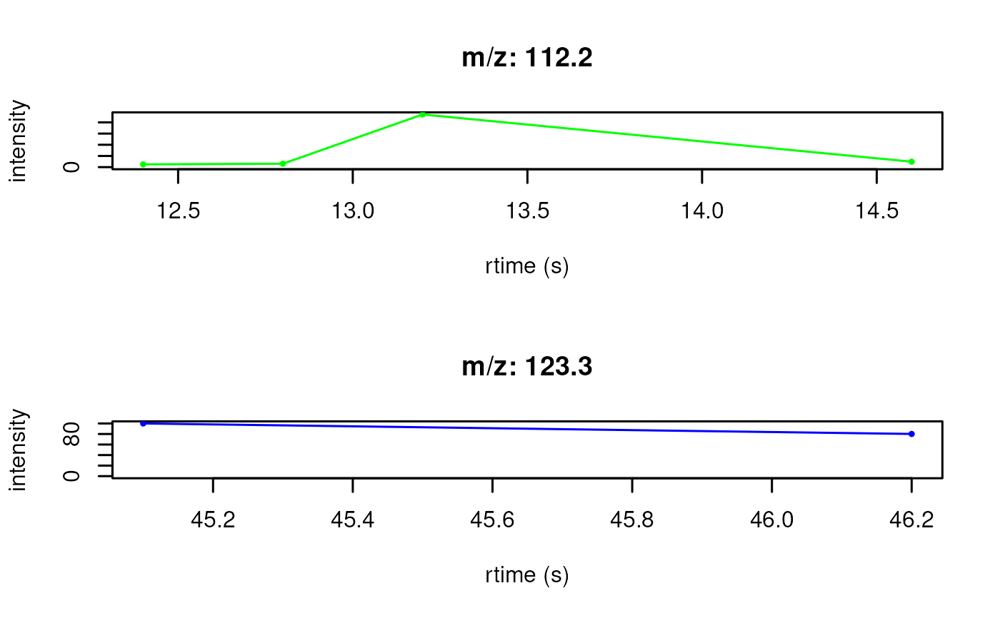
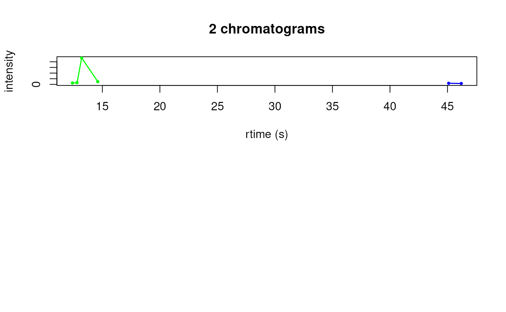

Chromatograms() can be plotted with the following functions:
The plotChromatograms(): plots each chromatogram in its separate plot by
splitting the plot area into as many panels as there are spectra.
Usage
# S4 method for class 'Chromatograms'
plotChromatograms(
object,
xlab = "rtime (s)",
ylab = "intensity",
type = "o",
pch = 20,
cex = 0.6,
lwd = 1.5,
xlim = numeric(),
ylim = numeric(),
main = character(),
col = "#00000080",
asp = 1,
...
)
# S4 method for class 'Chromatograms'
plotChromatogramsOverlay(
object,
xlab = "rtime (s)",
ylab = "intensity",
type = "o",
pch = 20,
cex = 0.6,
lwd = 1.5,
xlim = numeric(),
ylim = numeric(),
main = paste(length(object), "chromatograms"),
col = "#00000080",
axes = TRUE,
frame.plot = axes,
...
)Arguments
- object
A Chromatograms object.
- xlab
character(1)with the label for the x-axis (by defaultxlab = "rtime (s)").- ylab
character(1)with the label for the y-axis (by defaultylab = "intensity").- type
character(1)specifying the type of plot. Seeplot.default()for details. Defaults totype = "l"which draws each peak as a line.- pch
integer(1)orcharacter(1)specifying the plotting symbol (seeplot.default()).- cex
numeric(1)specifying the size of the plotting symbol (seeplot.default()).- lwd
numeric(1)specifying the line width (seeplot.default()).- xlim
numeric(2)defining the x-axis limits. The range of m/z values are used by default.- ylim
numeric(2)defining the y-axis limits. The range of intensity values are used by default.- main
character(1)with the title for the plot. By default the spectrum's MS level and retention time (in seconds) is used.- col
color to be used to draw the peaks. Should be either of length 1, or equal to the number of chromatograms (to plot each chromatograms in a different color) or be a
listwith colors for each individual peak in each spectrum.- asp
numeric(1)the aspect ratio of the plot, i.e. the ratio of the y-axis to the x-axis. Defaults to 1.- ...
Additional arguments to be passed to
plot.default().- axes
logical(1)whether (x and y) axes should be drawn.- frame.plot
logical(1)whether a box should be drawn around the plotting area.
Value
These functions create a plot.
Refer to the individual function description for information on the return value.
Examples
## Create a Chromatograms object
cdata <- data.frame(
msLevel = c(1L, 1L, 1L),
mz = c(112.2, 123.3, 134.4),
chromIndex = c(1L, 2L, 3L)
)
pdata <- list(
data.frame(
rtime = c(12.4, 12.8, 13.2, 14.6),
intensity = c(123.3, 153.6, 2354.3, 243.4)
),
data.frame(
rtime = c(45.1, 46.2),
intensity = c(100, 80.1)
),
data.frame(
rtime = c(12.4, 12.8, 13.2, 14.6),
intensity = c(123.3, 153.6, 2354.3, 243.4)
)
)
chr <- backendInitialize(ChromBackendMemory(),
chromData = cdata,
peaksData = pdata
) |> Chromatograms()
## Plot one chromatogram
plotChromatograms(chr[1])
## Plot the full Chromatograms object
plotChromatograms(chr)
## Define a color for each peak in each chromatogram
plotChromatograms(chr[1:2], col = c("green", "blue"))

## Overlay all chromatograms
plotChromatogramsOverlay(chr[1:2], col = c("green", "blue"))
